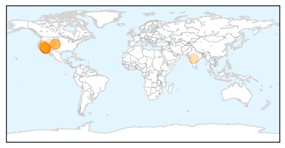

Measles
30-Day Web Trend
6 alerts, 3 warnings
30-Day Twitter Trend
0 alerts, 0 warnings

Article Locations
Article Confidences
Top Articles:
- 0.989
- Measles outbreak worsens in US after unvaccinated woman visits Disneyland
- 0.988
- Several in El Paso County quarantined due to measles exposure
- 0.972
- Disneyland measles: 'Ideal' incubator for major outbreak
- 0.965
- Disneyland, holiday travel a perfect mix for measles' spread
- 0.958
- Disney measles cases involve a Ventura County resident
- 0.957
- News Scan for Jan 14, 2015
- 0.953
- Seven new measles cases reported, linked to an outbreak from the Happiest Place on Earth
- 0.949
- Disney measles cases call attention to vaccination issues
- 0.918
- America’s measles-pocalypse is beginning all over again
- 0.873
- To Vaccinate Or Not Vaccinate « CBS Atlanta
- 0.844
- Health officials to monitor 300 exposed to measles in Colorado Springs
- 0.841
- Disneyland measles outbreak highlights growing anti-vaccine trend
- 0.821
- More measles cases linked to Disneyland
- 0.742
- Measles scare shuts down La Mesa urgent care clinic
- 0.692
- Utah health officials monitoring 200 people for possible measles
- 0.599
- Parents Stand Firm Against Vaccination Amid Measles Outbreak « CBS Los Angeles
Top Tweets:
-
No tweets found for Jan 14, 2015
Mold/Fungal
30-Day Web Trend
0 alerts, 0 warnings
30-Day Twitter Trend
0 alerts, 0 warnings

Article Locations

Article Confidences

Top Articles:
-
No articles found for Jan 14, 2015
Top Tweets:
-
No tweets found for Jan 14, 2015